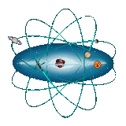

MERI
Magyar Egyetemek Robotika Iskolája
Célkorosztály: 6–22 évesek
Fókusz: alapozó oktatási és képzési anyagok fejlesztése, a fiatal generációk bevezetése a robotika és az informatika világába.

Ez a profil a Csindra Alapítvány hivatalos nyílt forráskódú projektjeinek, oktatási anyagainak és kutatási fejlesztéseinek ad otthont. Célunk a természettudományos, egészségügyi és műszaki tudományos kutatások, az űrkutatás, valamint a robotika és a digitalizáció elősegítése.
Az Alapítvány hivatalos weboldala: web.csindra.hu
Az alapító okiratunk szerint az alábbi területekre fókuszálunk:
Tartalmilag összefüggő, de formátumában és módszertanában a különböző életkorokhoz igazított projektjeinket három fő repository-ban kezeljük:
Magyar Egyetemek Robotika Iskolája
Célkorosztály: 6–22 évesek
Fókusz: alapozó oktatási és képzési anyagok fejlesztése, a fiatal generációk bevezetése a robotika és az informatika világába.
Computer Aided Design
Célkorosztály: 16–32 évesek
Fókusz: számítógépes tervezés, robotika és az MI (mesterséges intelligencia) összekapcsolása, tananyagfejlesztés egyetemi hallgatóknak Arduino és Raspberry Pi alapokon.
Computer Numerical Control
Célkorosztály: 26–80 évesek
Fókusz: robotgyártás, javítás, automatizálás kutatása. Felnőttképzés és ipari alkalmazások az űrkutatás és az orvostudomány támogatására.
| Témakör [Azonosító] | Kezdő | Közép | Felső | Mester |
|---|---|---|---|---|
| Korosztály (év) | 6–16 | 14–22 | 16–32 | 26–80 |
| neve, csoportja → | MERI | MERI | CAD | CNC |
| Fizika [F] | F24 | |||
| Kommunikáció (Híradás) [H] | H35 | |||
| Matematika [M] | M10 | M21 | M30 | M40 |
| Inteligenciák, AI/MI (Neuron) [N] | N38 | |||
| Robotika [R] | R11 | R23 | R36 | R46 |
| Gen-X [X] | X09 | X09 | X09 | X09 |
Közösségünk nyitott minden fejlesztő, oktató és kutató előtt. Az alábbi módokon segíthetsz:
A legaktívabb közreműködőket nyilvános elismerésben, oklevélben és az Alapítvány értékrendje szerinti érmekkel (BATKA, TALENTUM, KARÁT) jutalmazzuk!
Kérjük, hogy a közös munka során mindig tartsd be az Alapítvány adatvédelmi szabályzatát és etikai kódexét. A projektek részletes licencfeltételeit az adott repository-kban találod meg.